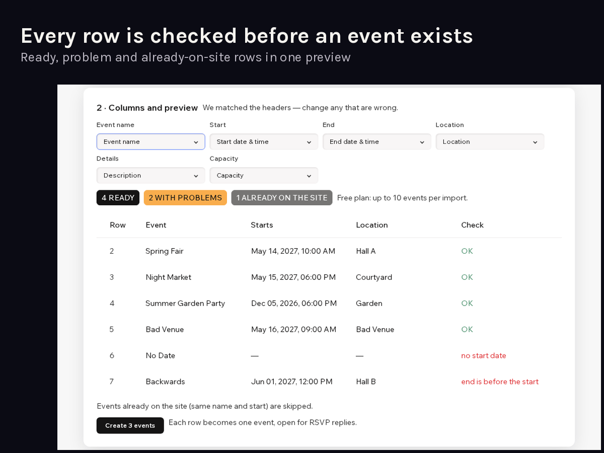

Event Import: CSV Events
Create many events from one spreadsheet
- Paste or upload a CSV and map the columns
- Every row checked before anything is created
- Events already on your site are skipped
- Free: 10 events per import, preview first

What it does
A season, a festival or a workshop series usually means retyping a spreadsheet into event forms, one by one. This app reads that spreadsheet and creates the events.
Pick the time zone the dates are in, then paste the rows or upload a CSV file, with commas, semicolons or tabs and quoted cells. The first row is read as column names and matched to event name, start, end, location, description and capacity; any guess can be changed.
The preview checks every row. A missing name, an unreadable start or an end before the start is marked with the reason, and a row whose name and start time are already on your site is marked as already there, so a list can be read in twice without doubles. Rows that need attention are left out, not guessed at.
When you press create, each row becomes one RSVP event. A summary counts created, skipped and failed rows, and offers a CSV file of the result with a link to your events.
Free covers one import of up to ten events, with the full preview before anything is written. Premium removes the limits and adds a switch that lets events already on the site be created again on purpose. The app runs in your dashboard, and the pasted text stays in your browser.
Price
Free
- One import of up to 10 events
- Full preview with per-row checks
- Columns mapped automatically
- Events already on the site skipped
Premium
$5/month, or $4/month billed yearly ($48/year), with a 14-day free trial
- Unlimited imports and events
- Unlimited rows per import
- Duplicate switch: skip or create
- Every column, capacity and price carried